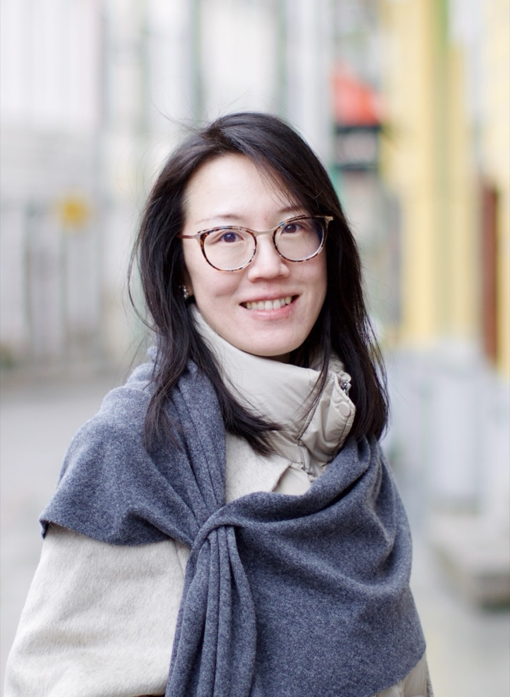

Postdoctoral Researcher · Aalto University
Vivienne H. Wang
I am a Postdoctoral Researcher in the Aalto Robot Learning Lab, Finland, working with Joni Pajarinen. My recent research mainly explores novel algorithms for Reinforcement Learning and its applications in Agentic AI.
I did my PhD in the Robot Learning Lab of Aalto University and the Computer Vision Group of Tampere University, supervised by Joni Pajarinen and Joni Kämäräinen. During 2015–2016, I worked as a research assistant in the Deep Learning and Bayesian Modeling group of Aalto University, supervised by Tapani Raiko and Juha Karhunen, and I was a research intern at Nokia Research Center in 2014.
I have published at top AI/ML venues such as ICML, ICLR, AAAI and IJCAI, hold one US patent in the related fields, and received an IEEE best paper (runner-up) award at ICME 2015. My research publications in collaboration with Nokia scientists won the Nokia Labs Award in 2016 and 2017. I co-organized the RememberRL Workshop at CoRL 2025.

Research
My research sits at the intersection of reinforcement learning, probabilistic and generative modelling, and multi-agent systems, aiming to build agentic AI systems that can plan, act, remember, and cooperate reliably under uncertainty.
- Reinforcement learning
- Hierarchical planning
- Probabilistic & generative modelling
- Multi-agent systems
Selected Publications
Full list on Google Scholar →-
ICML 2026 New
Learning Multi-Timescale Abstractions for Hierarchical Combinatorial Planning
The Forty-third International Conference on Machine Learning (ICML), 2026
A model-based hierarchical reinforcement learning framework for sequential stochastic combinatorial optimization. A latent-space tree-search planner uses an SMDP-aware world model whose multi-timescale objective makes latent transitions reflect the duration of abstract actions, and a subgoal-conditioned budget policy allocates resources by context.
-
ICML 2025
Hierarchical Reinforcement Learning with Uncertainty-Guided Diffusional Subgoals
The Forty-second International Conference on Machine Learning (ICML), 2025
A GP-regularized hierarchical diffusion policy models uncertainty to generate subgoals, improving sample efficiency and control performance.
-
ICLR 2025
Multi-Scale Fusion for Object Representation
International Conference on Learning Representations (ICLR), 2025
We propose Multi-Scale Fusion (MSF) to enhance VAE guidance for Object-Centric Learning (OCL) training.
-
ACM MM 2025
Vector-Quantized Vision Foundation Models for Object-Centric Learning
ACM International Conference on Multimedia (ACM MM), 2025
We propose a simple yet effective unified architecture for OCL, which outperforms baselines in object discovery and recognition, as well as downstream visual prediction and reasoning.
-
ICML 2024
Probabilistic Subgoal Representations for Hierarchical Reinforcement Learning
The Forty-first International Conference on Machine Learning (ICML), 2024
We propose a new Gaussian processes (GPs) based method for learning probabilistic subgoal representations in Hierarchical Reinforcement Learning (HRL).
-
AAAI 2023
State-Conditioned Adversarial Subgoal Generation
Thirty-Seventh AAAI Conference on Artificial Intelligence (AAAI), 2023
We propose a novel adversarially guided subgoal generation framework for goal-conditioned HRL to mitigate the issue of non-stationarity in off-policy training.
-
IJCAI 2017
Cross-Granularity Graph Inference for Semantic Video Object Segmentation
International Joint Conference on Artificial Intelligence (IJCAI), 2017
We address semantic video object segmentation via a novel cross-granularity hierarchical graphical model to integrate tracklet and object proposal reasoning with superpixel labeling.
-
CVIU 2016
Primary Object Discovery and Segmentation in Videos via Graph-Based Transductive Inference
Computer Vision and Image Understanding (CVIU), 2016
We present a novel algorithm that detects recurring primary object and learns cohort object proposals over space-time in video. Our core contribution is a graph transduction process that exploits both appearance cues learned from rudimentary detections of object-like regions, and the intrinsic structures within video data.
-
ACCV 2016
Semi-Supervised Domain Adaptation for Weakly Labeled Semantic Video Object Segmentation
Asian Conference on Computer Vision (ACCV), 2016
We propose a semi-supervised approach to adapting CNN image recognition model trained from labeled image data to the target domain exploiting both semantic evidence learned from CNN, and the intrinsic structures of video data.
-
Neurocomputing 2015
A Weakly Supervised Geodesic Level Set Framework for Interactive Image Segmentation
Neurocomputing, 2015
We combine geodesic distance information with the flexibility of level set methods in energy minimization, leveraging the complementary strengths of each to promote accurate boundary placement and strong region connectivity while requiring less user interaction.
Teaching
-
2026
Guest Lecturer Reinforcement Learning ELEC-E8125, Aalto University Guest lecture: “Hierarchical Reinforcement Learning.”
-
2025 – present
Demo Coordinator Aalto Robot Lab, Aalto University Coordination and development of research demonstrations and lab visits (open lab events, school/university visits, and outreach).
-
2023 – 2025
Teaching Assistant Reinforcement Learning ELEC-E8125, Aalto University
-
2024
Master Course Instructor Project Work ELEC-E8004, “Soundscape to Video Using Generative AI” Designed the GenAI & Arts framework and supervised a 4-member student team in collaboration with Sini Majuri; the resulting artwork was exhibited at The Venice Glass Week and featured by Yle.
-
2024
Master Course Tutor Seminar in Computer Science D CS-E4000 “A Comprehensive Overview of Goal-Conditioned Hierarchical Reinforcement Learning: Algorithms, Challenges and Future Directions.”
-
2018
Teaching Assistant Introduction to Machine Learning, Tampere University
-
2017
Teaching Assistant Pattern Recognition and Computer Vision, Tampere University
Service
- 2027
Reviewer Conference on Computer Vision and Pattern Recognition (CVPR)
- 2025
Senior Program Committee Member Reinforcement Learning Conference (RLC)
- 2025
Co-organiser RememberRL Workshop, Conference on Robot Learning (CoRL)
- 2020 – 2025
Program Committee Member and Reviewer AAAI Conference on Artificial Intelligence (AAAI)
- 2024 – 2026
Reviewer International Conference on Learning Representations (ICLR)
- 2022 – 2025
Reviewer Conference on Neural Information Processing Systems (NeurIPS)
- 2022 – 2026
Reviewer International Conference on Machine Learning (ICML)
Media and Press
Yle featured Dreamweaver, an outcome of Project Work ELEC-E8004 (2024), “Soundscape to Video Using Generative AI,” in collaboration with Finnish glass artist Sini Majuri on merging generative AI with the ancient craft of glassmaking.
As Master Course Instructor, I designed the project and led, supervised, and instructed a 4-member student team working with Sini Majuri on an artwork exhibited at Europe's most significant contemporary glass event, The Venice Glass Week.